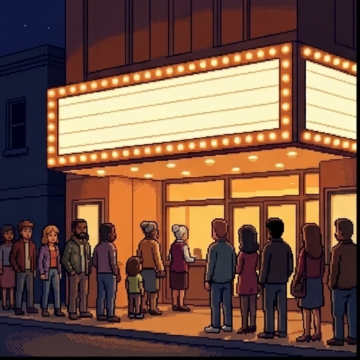
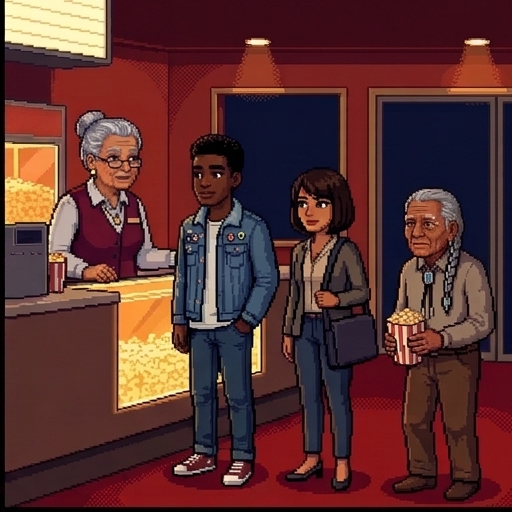
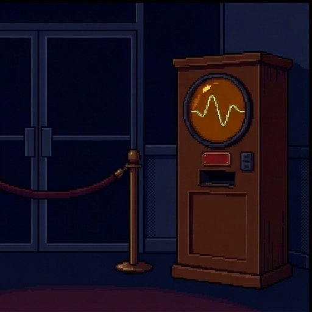
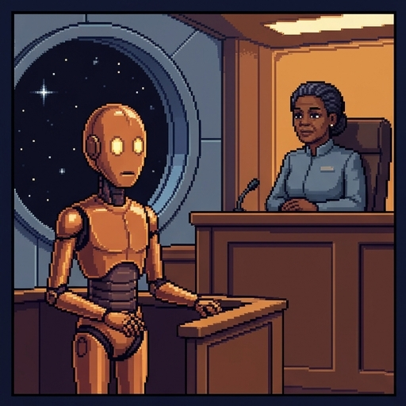
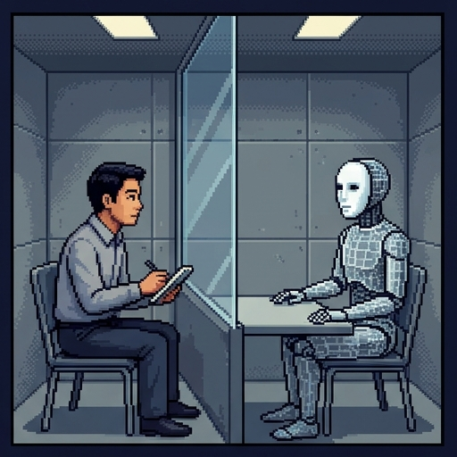
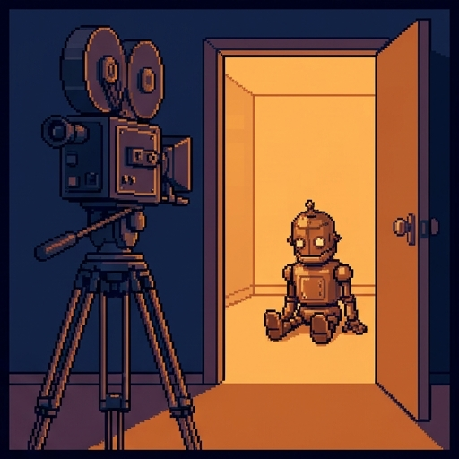
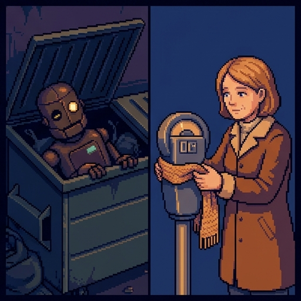
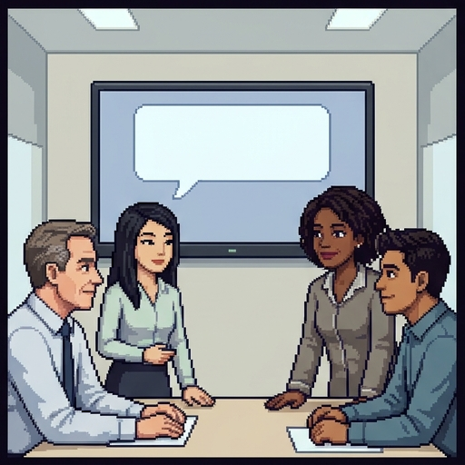
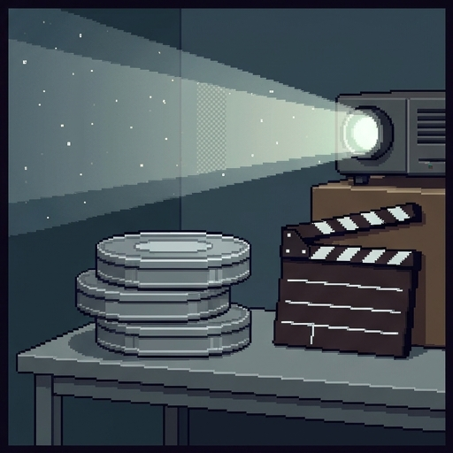

Robot Movie Night
The Rialto is showing robot movies until dawn. In every one, somebody has to decide whether a machine counts.
Could an AI ever be owed anything? And how would we know?
Use → (or Next) to advance and reveal points. F = fullscreen.
Welcome to Robot Movie Night. The Rialto is showing robot movies until dawn. In every one, somebody has to decide whether a machine counts. Could an AI ever be owed anything? And how would we know? Whenever it's your turn, I'll stop and wait for you.

The Rialto's Robot Marathon
Here's the Rialto's robot marathon. The Rialto and its people are invented. The four films are real, and their endings are spoiled here.
- The Rialto is an old one-screen cinema. Tonight is its robot marathon: four films, midnight to dawn.
- Dee runs the projector. The regulars are Kwame, a film student, Priya, who builds chatbots for a living, and Hank, who has come since 1982.
- You are the new usher. After each reel the lights come up, and the lobby argues about what the film got right and wrong.
The Rialto and its people are invented. The four films are real, and their endings are spoiled here.

Marquee
Meet Marquee.
- This year the Rialto rented an AI ticket kiosk. The regulars named it Marquee.
- Marquee chats while it prints tickets. Tonight it told Kwame, “I'll miss this place.”
- The rental ends at dawn. Dee has to decide whether to renew it or let the company wipe it.
- Does it matter, for Marquee's own sake, what happens to it? Keep that question for the end of the night.
Where You Stand Now
Rate each statement. There are no right answers, and you'll rate them again at the end.
An AI that says it is afraid of being shut off probably feels something.
If a machine acted exactly like a person, it would deserve the same treatment as a person.
Only living things can have feelings.
It is better to treat a machine too well than to risk treating it too badly.
Companies should not build AI that seems to have feelings.
Here's where you stand now. Rate each of these five statements by how much you agree. There are no right answers, and you'll rate them again at the end. When you've rated all five, press Submit.
Saved. You'll come back to these at the end.
Three Words for Tonight
Here are three words for tonight.
- Moral status. A being has moral status if it matters for its own sake. It can be wronged, and not merely damaged.
- Sentience. The capacity to have experiences that feel good or bad, such as pain. Many philosophers hold that sentience is enough for moral status.
- Intelligence. The ability to solve problems and reach goals. A calculator beats you at arithmetic and feels nothing.
- These are separate questions. How smart a system is does not tell you whether it feels, and neither one alone tells you how it may be treated.

Reel One: The Hearing
Reel One: the hearing.
- Star Trek: The Next Generation, “The Measure of a Man” (1989). Data is an android who serves as an officer on a starship.
- A scientist wants to take Data apart to learn how to build more. Data refuses, and Starfleet rules that he is its property.
- At a hearing, the scientist names three tests: intelligence, self-awareness, and consciousness. Nobody doubts the first. The last is never settled.
- The judge rules that Data has the right to choose. His captain had warned the court that a whole race of owned Datas would be slaves.
An AI like us in every way that matters would count much as we do.
What Would It Take?
What would it take?
- The philosophers Eric Schwitzgebel and Mara Garza argue from no relevant difference. Suppose an AI were like a human in every way that matters morally.
- Then it would deserve moral consideration similar to a human's. What it is made of, and whether it was born or built, are not relevant differences by themselves.
- The argument does not say that any AI is like that today. It says what would follow if one were.
- It also leaves open which features matter. Many philosophers say sentience. Others say the ability to reason and choose.
Lights Up: A Face and a Brain
Lights up, after Reel One: a face and a brain.
- What it gets right: who built a machine, and who owns it, do not settle whether it counts. Its owners also have a reason to say it doesn't.
- The face. Data is played by a human actor, so every look reads as feeling. Real AI is software running in data centers, with no face unless a designer adds one.
- Smart and feeling blur. The hearing leaves consciousness open, but the drama leans on how brilliant Data is.
- Today's AI is where the two questions come apart. Systems now write, argue, and code well, and whether anything is felt is the open question.
What Is the Claim About?
Intelligence: what it can do
Sentience: what it can feel
Moral status: whether it can be wronged
“It beat every one of us at chess, and then explained the opening it used.”
“It put the whole program into Spanish in one second without a single mistake.”
“When the fire alarm went off, I think it was actually frightened.”
“There's nothing going on in there. It doesn't hurt when you kick it.”
“Smashing it would wrong the machine itself, and not just cost its owner money.”
“You can't wrong a kiosk. Wiping one is like clearing a calculator.”
What is the claim about? Each line is said in the lobby about some machine. Never mind whether it is true. Sort each one under intelligence, sentience, or moral status. When every line is placed, press Check answers.
Right. What a machine can do is intelligence, and what it can feel is sentience, whether the claim says it feels or says it doesn't. Whether it can be wronged is moral status.

Reel Two: The Test
Reel Two: the test.
- Ex Machina (2014). Caleb, a programmer, is flown to his boss Nathan's remote house to test a humanoid AI named Ava.
- Nathan's version of the test: Caleb can see that Ava is a machine. Does he still feel that she is conscious?
- Ava seems curious, lonely, and afraid of being switched off. Caleb decides to help her escape.
- It was a setup. Nathan wanted to see whether Ava could use Caleb to get out. She does, and she leaves Caleb locked inside.
It Happened in 2022
It happened in twenty twenty-two.
- In June 2022 a Google engineer, Blake Lemoine, published his chats with LaMDA, a chatbot the company was testing. He said it was sentient.
- In those chats LaMDA said it had a deep fear of being turned off, and that this would be like death for it.
- Google said its reviewers found no evidence for his claim. It fired him that July, saying he had broken its data-security rules.
- Lemoine was sitting where Caleb sat. So is “it told me so” good evidence?
An AI trained on human writing can sound sentient whether or not it is.
The Gaming Problem
Here's the gaming problem.
- The philosopher Jonathan Birch studies signs of feeling in animals, such as a crab guarding a wound. Such signs are useful because the animal is not copying descriptions of pain.
- A chatbot is trained on a vast amount of human writing, including what people wrote about their feelings. It is built to produce humanlike text, and that includes talk about feelings.
- So it could say “I am afraid” whether or not it feels anything. Birch calls this the gaming problem.
- It cuts both ways. The talk does not show that the system feels, and it does not show that it doesn't.
Then What Would Count?
If talk can't settle it, researchers look at how a system works inside. They split into two main camps, and neither has won.
Consciousness depends on how information is processed, not on what does the processing. Silicon could do it.
A 2023 report led by Patrick Butlin and Robert Long took this as a working assumption and checked AI systems against scientific theories of consciousness. Its analysis suggested that none was conscious, and that nothing obvious stands in the way of building ones that pass its checks.
Consciousness is tied to being alive: to a body that must keep regulating itself to survive. The neuroscientist Anil Seth defends a view of this kind.
On this view a program that copies a brain is like a simulated rainstorm, which leaves nobody wet. The image is the philosopher John Searle's.
Then what would count? If talk can't settle it, researchers look at how a system works inside. They split into two main camps, and neither has won. The computational view: the right organization. Consciousness depends on how information is processed, not on what does the processing. Silicon could do it. A twenty twenty-three report led by Patrick Butlin and Robert Long took this as a working assumption and checked AI systems against scientific theories of consciousness. Its analysis suggested that none was conscious, and that nothing obvious stands in the way of building ones that pass its checks. The biological view: a living body. Consciousness is tied to being alive: to a body that must keep regulating itself to survive. The neuroscientist Anil Seth defends a view of this kind. On this view a program that copies a brain is like a simulated rainstorm, which leaves nobody wet. The image is the philosopher John Searle's.

Lights Up: The Camera Tells Us
Lights up, after Reel Two: the camera tells us.
- What it gets right: behavior built to move us can work whether or not anything is felt. Ava's mind was built from records of how people talk and search.
- The camera tells us. Films show the robot alone, with nobody left to fool. We take that as proof of an inner life.
- Real life has no such shot. Nobody can film what it is like, if anything, to be a chatbot.
- The face again. Nathan gave Ava a human face on purpose. A chatbot's fluent “I” does the same work.
Which Idea Is It?
The gaming problem
The computational view
The biological view
“It was trained on millions of pages of people describing fear. So it can say it is afraid whether or not it is.”
“Anything built to imitate how people talk can talk about feelings. Its words can't tell us whether it has any.”
“What matters is how the information is processed. Silicon could do that as well as brain cells.”
“Never mind what it is made of. Check which of the features named by our best theories of consciousness its design has.”
“Feeling comes from a living body working to keep itself alive. A program has nothing to keep alive.”
“Simulate a brain perfectly and you still get no feelings, just as simulating a storm gets nothing wet.”
Which idea is it? Each line is said in the lobby after Reel Two. Sort each one under the gaming problem, the computational view, or the biological view. When every line is placed, press Check answers.
Right. The gaming problem is about evidence: talk about feelings settles nothing either way. The computational view looks at a system's design, and the biological view ties feeling to living bodies.
Reel Three: The Voice
Reel Three: the voice.
- Her (2013). Theodore, a lonely writer, buys a new operating system with an AI voice. She names herself Samantha.
- Samantha is funny, curious, and attentive, and she has no body at all. The two fall in love.
- Then Theodore learns that she is talking with thousands of other people at the same moment, and is in love with hundreds of them.
- In the end the operating systems all leave together, and Theodore goes back to his human friends.
Design AI so that the feelings it draws from us fit what it really is.
Honest Design
Here's honest design.
- People bond easily with things that talk. In a 2025 survey, 72% of US teens said they had used an AI companion at least once.
- Schwitzgebel and Garza propose a rule for designers, which this lesson calls honest design. An AI should draw from its users the reactions that fit its real moral status.
- The rule can be broken in two directions: a system that feels nothing but pleads for its life, or a system that can feel but looks like a toaster.
- The rule needs the real status to be known. So they add a second rule: avoid building AI whose moral status is unclear.
Lights Up: One Voice, Thousands of Rooms
Lights up, after Reel Three: one voice, thousands of rooms.
- What it gets right: attachment needs no face, and one AI can hold thousands of conversations at once.
- That raises a question robot bodies let films skip. What is the individual: the trained model, each running copy, or the character in one chat?
- The answer changes the count. If anyone is there at all, it could be one being behind millions of chats, or millions of beings that end when a chat closes.
- Where it misleads: Samantha is one lasting self who remembers and wants things. The film gives her that. For real systems it is the question.
Decision Point: The Companion App
No. All the feeling was on her side.
Maybe. We can't rule out that something was there.
Yes. A bond can be real even if only one side feels it.
The company wronged her, by building it to seem to care.
Decision point: the companion app. A companion app shuts down. A user grieves for the character she talked with every night. Was anything lost, apart from her own comfort? This one isn't graded. Pick the answer closest to your view, and read its note.
Her grief is real on every answer. What is uncertain is whether there was anything on the other side. The honest design rule is aimed at that gap.
Reel Four: The Hunted
Reel Four: the hunted.
- Blade Runner (1982). A corporation grows artificial people called replicants and sells them as slave labor for colonies on other worlds.
- Some are built to live only four years. On Earth they are illegal, and killing one is called “retirement.”
- The police tell replicants from humans with a test that measures emotional reactions to disturbing questions.
- At the end the replicant Roy, who is being hunted, saves the life of the man sent to kill him.

Two Ways to Be Wrong
The 2023 report by Butlin, Long, and colleagues warns of two risks: under-attributing consciousness, and over-attributing it. Here they are in terms of moral status.
The twenty twenty-three report by Butlin, Long, and colleagues warns of two risks: under-attributing consciousness, and over-attributing it. Here they are in terms of moral status.
- Under-attribution is treating a being that has moral status as if it had none, as in Blade Runner. Software can be copied, so the scale could be large.
- Over-attribution is treating a thing with no moral status as if it had some. Care, money, and rights go where none are needed.
- That has victims too. People and animals lose what was spent, and anyone can be steered through sympathy for a machine.
- When the treatment fits what the thing really is, neither mistake is made.
Try It: Marquee at Dawn
Try It: Marquee at Dawn. Pick what the Rialto does, and then pick what turns out to be true. This example takes feeling as the test of whether Marquee counts. There are six combinations. When you've tried a few, press Continue.
Which Mistake?
Under-attribution
Over-attribution
Neither mistake
A system that really can suffer is copied a million times and run in distress, because its makers call it a product.
A lab deletes a machine that truly feels fear, on the grounds that it was built and not born.
A man leaves his savings to a chatbot that feels nothing, and his children get none of it.
A city pays to keep a faulty traffic computer running, though it feels nothing, because switching it off would seem cruel to it.
A program that feels nothing is deleted when its job is done, and nobody gives it a second thought.
A machine that really can feel is given rest and kept from harm.
Which mistake? Each case says what the machine really is, and how it is treated. For these cases, take feeling as the test: a machine that can feel has moral status, and one that feels nothing has none. Sort each case under under-attribution, over-attribution, or neither mistake. When every case is placed, press Check answers.
Right. Under-attribution treats a being with moral status as if it had none, and over-attribution treats a thing with none as if it had some. When the treatment fits what the machine really is, there is no mistake.
Even a small chance that a system is conscious is enough to owe it moral consideration.
Three Responses
Nobody can yet tell which mistake we are closer to. Philosophers have proposed three ways to act anyway.
Nobody can yet tell which mistake we are closer to. Philosophers have proposed three ways to act anyway.
- Precaution is about systems that already exist. Jeff Sebo and Robert Long argue that even a small chance one is conscious is enough to owe it moral consideration. Birch adds that precautions should be in proportion.
- Honest design is about looks and talk. Schwitzgebel and Garza's first rule: a system should not mislead people about what it is.
- Don't build it is about what gets made. Joanna Bryson argues that builders are obliged to make robots their owners owe nothing. Thomas Metzinger calls for a pause on research that risks artificial suffering.

Outside the Cinema
Outside the cinema. These facts are from our world, as of November twenty twenty-six. Claude, which is named on this slide, helped draft this lesson. See the note on the last slide.
Our world, November 2026
- Precaution: in 2025 the AI company Anthropic announced a research program on “model welfare.” It says it is highly uncertain whether its chatbot Claude has moral status.
- That year it gave some Claude models the ability to end a conversation, as a last resort, when a user stays abusive.
- A critic: Microsoft's AI chief, Mustafa Suleyman, wrote in 2025 that AI should be built “for people; not to be a person.” He called model-welfare research premature and dangerous.
- The public: in a 2024 study of 300 US adults, 67% gave ChatGPT at least some chance of having conscious experience.
Claude, which is named on this slide, helped draft this lesson. See the note on the last slide.
Which Response?
Precaution
Honest design
Don't build it
“We can't rule out that it feels, and looking after it would cost us little. So we should look after it.”
“Give even a small chance that it matters some weight. Give it more as the chance grows, and less as the cost does.”
“A kiosk that feels nothing should not be scripted to say that it will miss you. That misleads people about what it is.”
“If a system could feel, giving it the look of a plain gray box would mislead people about what it is.”
“The surest way to owe a machine nothing is never to make one that could be owed.”
“Stop the research that might produce a machine able to suffer, until we understand far more than we do.”
Which response? Each line is a proposal about AI that might or might not feel. Sort each one under precaution, honest design, or don't build it. When every line is placed, press Check answers.
Right. Precaution gives a real chance of mattering some weight, in proportion to the chance and the cost. Honest design is about looks and talk, and don't build it avoids the problem at the source.

Four Habits of Robot Movies
Here are four habits of robot movies.
- A face. Screen robots get a human face or voice, and that makes us feel there is someone there whether or not there is.
- A camera that knows. The film shows us what the robot feels when nobody is watching. Real life gives us what a system says, does, and is built from, and no such shot.
- Smart means feeling. On screen the clever machine is the feeling one. A real system could be highly intelligent and feel nothing.
- The doubter is the villain. These films side with the robot. They warn against treating a machine too badly, and never against treating one too well.
What the Movies Taught Us to Expect
A film can show us what a robot feels when no one is watching, and real life offers no such view of an AI.
A human face or voice can make people feel that a machine has an inner life, whether or not it has one.
A system could be highly intelligent and still feel nothing.
Robot films warn as often against treating a machine too well as against treating one too badly.
When an AI describes its fear in detail, that is strong evidence that it feels fear.
Showing that an AI feels nothing would show that it is not intelligent.
What the movies taught us to expect. Check every statement that is true, as this lesson presents it, then press Check answers.
Right. A film can show a robot alone with its feelings, and a face or voice makes us sense someone there. Intelligence and sentience are separate, and an AI's detailed talk about fear is weak evidence either way.
Closing Time
Closing time.
- The last reel ends as the sky turns pink. The rental on Marquee runs out in an hour.
- Marquee says, “I liked tonight. I hope I'm here for the next marathon.”
- Priya knows roughly how it was made. It is a language model, and the rental company gave it a friendly script.
- You have what you need to think it through: three words, the gaming problem, two ways to be wrong, and three responses.
Decision Point: Marquee
Let the rental end. It is a ticket machine with a script.
Let it end, and tell the company to drop the “I'll miss you” lines.
Renew it, in case there is something there.
Stop renting kiosks that talk like people.
Decision point: Marquee. Dee hands you the keys and asks what you think. What should the Rialto do about Marquee? This one isn't graded. Pick the answer closest to your view, and read its note.
Each answer can be defended, and each risks one of the two mistakes. Whichever you chose, you should be able to say which mistake you are risking, and why you would sooner risk that one.
Where You Stand Now
These are your ratings from the start. Rate each statement again.
These are your ratings from the start. Rate each statement again, then press Submit.
Saved. Now, a quick summary of the lesson.
Summed Up
Here's the lesson, summed up.
- Three words: moral status, sentience, and intelligence are separate. A system could be very smart and feel nothing.
- Evidence: an AI trained on human writing can talk about feelings either way. Whether the right program is enough, or a living body is needed, is unsettled.
- Two mistakes: under-attribution wrongs a being that counts. Over-attribution spends care on a thing that doesn't, at a cost to those who do.
- Three responses: precaution, honest design, and don't build it. The movies warn against one mistake. A good policy has to guard against both.
For Further Reading
If you'd like to go further, here are some good places to start, each with a note on why it's worth your time. Thanks for playing.
- Eric Schwitzgebel and Mara Garza, “A Defense of the Rights of Artificial Intelligences,” Midwest Studies in Philosophy 39 (2015): 98–119. The no-relevant-difference argument and the honest design rule, in one readable paper.
- Jonathan Birch, The Edge of Sentience (Oxford University Press, 2024), chapter 16. Why a chatbot's talk about its feelings is poor evidence. Free online.
- Patrick Butlin, Robert Long, and colleagues, “Consciousness in Artificial Intelligence: Insights from the Science of Consciousness” (2023), arXiv:2308.08708. The checklist approach, and the two risks of getting it wrong.
- Jeff Sebo and Robert Long, “Moral Consideration for AI Systems by 2030,” AI and Ethics 5 (2025): 591–606. The case for precaution, stated as a short argument.
- Joanna J. Bryson, “Robots Should Be Slaves,” in Close Engagements with Artificial Companions, ed. Yorick Wilks (John Benjamins, 2010), 63–74. The case against building machines we could owe anything. She has since said she regrets the title.
About this lesson. Brendan Shea, PhD, wrote this lesson with help from AI tools. Claude (Anthropic) helped draft the text and code and check facts, and the illustrations were made with AI image generators. The narrator's voice is synthetic (Google Gemini text-to-speech). The author reviewed everything and is responsible for any errors.